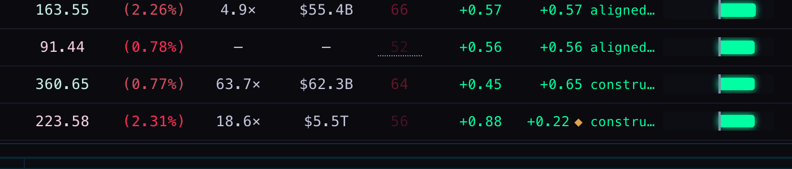
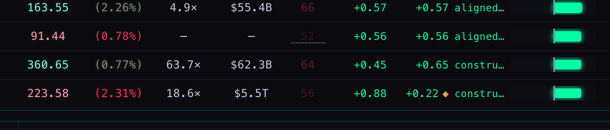
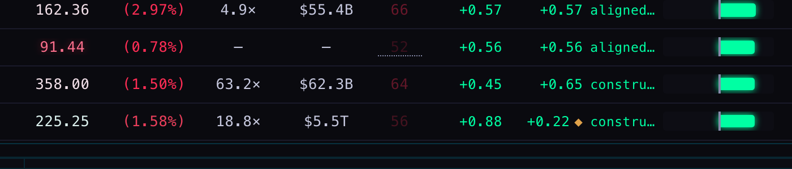
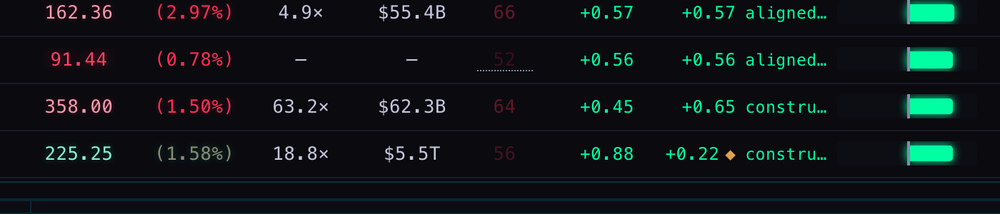
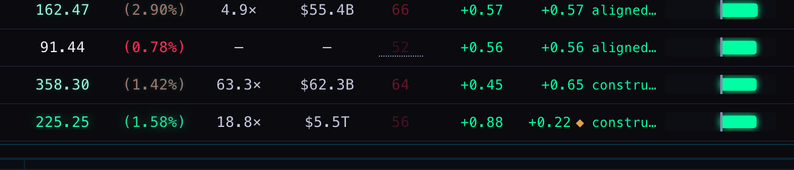
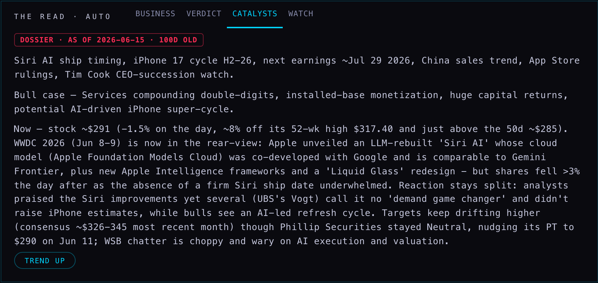
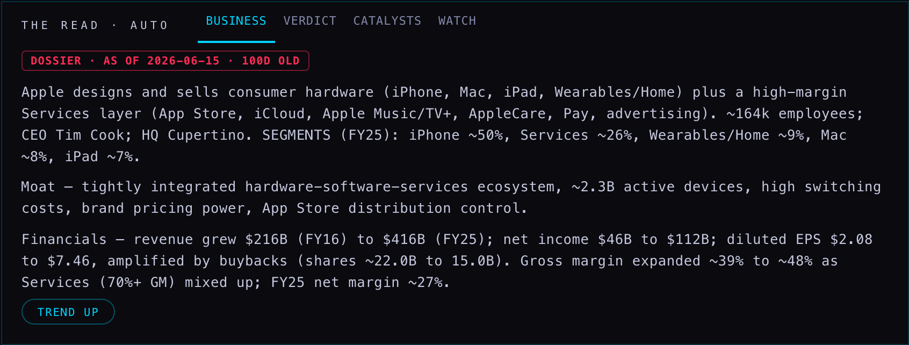
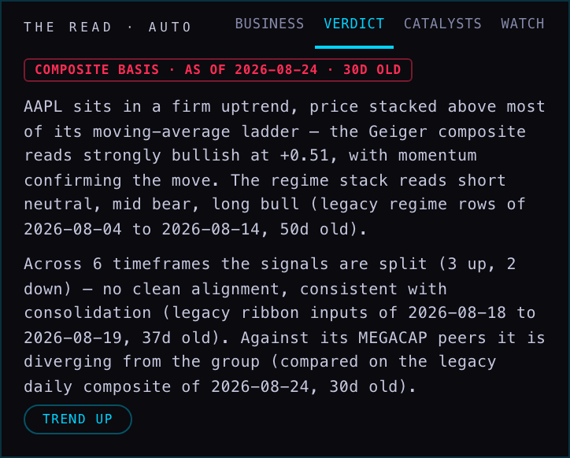
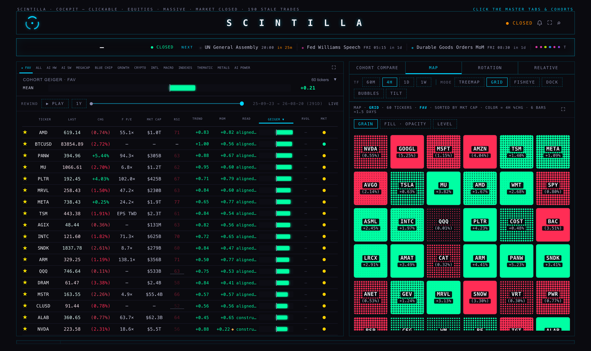
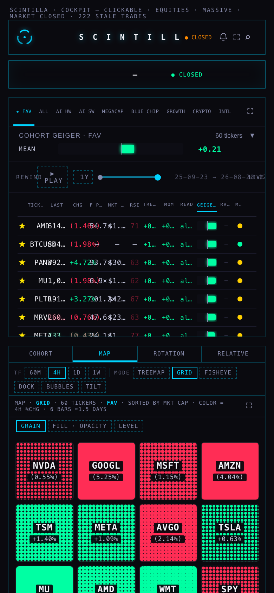

Two things Alan asked for on the evening of the 23rd: a number that changes should scintillate — in the tape, on the board, in the cohorts — and the company read should stop passing off months-old words as today's. The first is built and measured. The second turned out to have a specific, provable cause, and the Hub now states the age of every section on its face.
The rule, enforced in one primitive rather than at each call site: a value glows only when what
the reader can see actually changed, in the direction it moved, for 520 ms, in colour and
text-shadow alone — never a size, a weight, a background or a padding, so a glow can never shift the
row under the eye. prefers-reduced-motion switches it off entirely; the number still
updates, it just sits down.
Captured on the real page with production data, driven through the page's own provider path
(patch(t, price, "PROVIDER") — the call scProviderTick makes per symbol),
with the browser's animation clock slowed to 6% so a single glow could be sampled.





Headless Chromium Chromium 151.0.7922.34, 364 rows, 20 ticks per arm, two passes each, main-thread
time read from the browser's own performance counters. The before arm is the shipped code
verbatim — the price flash that restarts a CSS animation with void node.offsetWidth.
| ARM | MAIN THREAD / TICK | LAYOUTS / TICK | STYLE (20 TICKS) | LAYOUT (20 TICKS) | |
|---|---|---|---|---|---|
| no glow at all (floor) | 3.7 ms | 1 | 2 ms | 28 ms | the same values written, nothing animated |
| shipped flash · price only | 170.6 ms | 289 | 771 ms | 1115 ms | one forced synchronous layout per changed row |
| M32 · price AND percentage | 67.7 ms | 29 | 177 ms | 274 ms | Web Animations API, and only for rows on screen |
So the new behaviour covers twice the cells for 2.5× less main-thread work than the flash it replaces, and 10× fewer layouts. Per-pass figures: before 155 and 186 ms/tick, after 67 and 68 ms/tick. At the live 2-second cadence the after arm is about 3.4% of one core.
Two changes, both structural. Restarting a CSS animation requires reading layout, so the shipped
flash forced 289 layouts a tick at 364 rows; Element.animate restarts without
reading anything. And a glow nobody can see is pure cost — the ALL board holds the whole universe
while the window shows about thirty rows, so each cell registers itself once with a single
IntersectionObserver and a row scrolled out of view now gets its new value with no
animation at all. No call site had to change for either.
Every 45 seconds renderTapes replaced the whole band with new HTML. That threw away the
marquee's scroll position (the band jumped back to its left edge mid-scroll) and destroyed any glow
in flight, so a tape could never show a change at all. A tick that changes only numbers now
patches the items where they stand and glows the ones that moved; a real change of membership or
order still rebuilds, because only then are new nodes needed. Every copy of a repeated segment is
patched, so the second half of the loop never scrolls in stale.
Alan: "All of these sections of the read, verdict, business catalyst, are super stale as far as I've read… why do they go stale to begin with?"
Because a row was dated by the job, not by the words. The writer, read-engine,
ends every run with updated_ts: now on every row it upserts, changed or not. Read live
on 23 Sep: all 386 verdict rows and all 206 business/catalysts/
watch rows carried 2026-09-23T23:10Z — minutes old. The words in them had not
changed since June or July. The Hub, having nothing else to date them with, showed no age at all.
| SECTION | TABLE / JOB | LAST REAL WRITE | WHY IT STOPPED | FIXED HERE |
|---|---|---|---|---|
| READ · BUSINESS | read_blocks.business ← ticker_context.business_now / deep_divejob: dossier-refresh | 2026-06-15 → 2026-07-22 (63–100 days) | dossier-refresh has not run since 2026-07-22T03:43Z — its own change_log entries stop there. It is an Anthropic-API job, so a restart spends credit per ticker. | Age on its face, dated from enriched_ts |
| READ · CATALYSTS | read_blocks.catalysts ← ticker_context.catalysts | same | same job. AAPL still reads "next earnings ~Jul 29 2026" — three months past. | same |
| READ · WATCH | read_blocks.watch ← ticker_context.watch_notes | same | same job | same |
| READ · VERDICT | read_blocks.verdict, generated from composite_staged (tf=D) | 2026-08-24 for 364 of 386 tickers (22 written today) | the legacy daily composite stopped advancing for the universe on 24 Aug; the narrative is re-generated from a frozen number and re-stamped. | Dated by the composite it was written from |
| NARRATIVE BASIS | read_blocks.basis | 2026-09-23 (today) | correct — it is generated live each run | wording corrected to what was measured |
| Analyst actions (grades) | analyst_grades, 34,529 rows | 2026-06-09 (106 days) | no writer has added a row since June. Not diagnosed further in this lane — it is a different ingester. | reported only |
| Press releases | company_releases | 2026-07-02 · 5 rows in total | the table was created and never filled — 5 rows across the whole universe. | reported only |
| Earnings call transcripts | earnings_call_transcripts, 1,405 rows | 2026-09-11 (12 days) | healthy for an earnings cadence | — |
| News · quotes · profile · Geiger | news, live_quotes, company_profile, provider artifact | 2026-09-23 (today) | current | — |
Each tab of the read carries the date of its own source: the dossier overlay for BUSINESS, CATALYSTS and WATCH; the composite the narrative was generated from for VERDICT. Under two days it is quiet, past two days it is marked, past a month it is drawn in the bear colour — and a section whose date cannot be proved says SOURCE DATE NOT RECORDED rather than looking current. The chip's tooltip names the re-stamp explicitly, so the job's own run time is visible but never mistaken for the age of the words.



The chip's tooltip carries the re-stamp. At 23:10Z it read 2026-09-23 23:10Z; on the next
capture, under an hour later, 2026-09-24 00:00Z. The job had run again and re-dated every row.
Both content dates — 2026-06-15 and 2026-08-24 — did not move at all.
The panel above is drawn by the page's own render functions (readPanelHTML,
readTxtHTML, readAgeHTML, readSectionAge) under the page's own
stylesheet, fed AAPL's production rows read live from read_blocks,
ticker_context and composite_staged. The live company view could not be driven
headlessly for these shots — with its other hosts blocked, the YouTube and X panels retry and the page
never goes idle for a screenshot — so the board captures above are from the live page and these four are
this render. The values in them are production's, unedited.
candidate/read-engine-content-date.patch stops the re-stamp: a row whose body is
byte-identical to the stored one is not written at all, so updated_ts keeps the date the
words last changed. It is a deployed edge function in another repository — this lane does not
deploy, schedule or invoke it, and the Hub deliberately does not trust
read_blocks.updated_ts until it is in.
The words are still from June and July. Only dossier-refresh writes them, it last ran
on 22 July, and restarting it spends Anthropic API credit per ticker — a coordinator decision, not
one this lane may take. What changed today is that a June paragraph can no longer pass for today's.


hub/polish-20260923, from origin/hub/release-20260923 @ b6913cb. Nothing deployed, pushed or merged.xfeed-publish, and a ytAgo call-site count) fail identically on the untouched release bytes; they are not from this work. 24 of the passing tests are new here.bench.html in this folder, which carries the scintillation code extracted verbatim from index.html; raw per-pass figures in cpu-measurements.json.